Название лекции
Разработка динамичесих веб приложений
Гладкий Максим Валерьевич / github:MaksHladki
Содержание лекции
Архитектура Windows Azure
Эволюция Windows Azure
- 2006 - создана «команда мечты» для разработки облачной ОС RedDog
- 2006 - команда Indigo (известная как Windows Communication Foundation) приступает к работе над экспериментальным реле коммуникации
- 2006 - команда SQL берет на себя разработку интернет-версии своей службы
- 2007 - три команды начинают сотрудничать друг с другом
- 2008 - объединение команд в проект Azure: службы .NET, онлайн-службы, службы SQL. Предствлена Azure CTP
Следующий этап эволюции
- 2009 - выходит версия CTP 3, подержка доверенного и платформенного кода, геолокация, fast CGI, PHP и Java SDK. Azure становится открытой платформой, выпускается первый официальный SDK 1.0
- 2010 - платформа доступка в 21 стране, реализована поддержка БД более 50 ГБ, полноценная поддержка IIS и службы удаленного рабочего стола
- 2011 - инструмент SQL Azure Reporting, Scheduler SDK для поддержки ресурсоемких параллельных приложений
- 2012 - добавлена архитектура IaaS, выпущен Python SDK. ЦОДы работают в 8 регионах мира
- 2013 - добавлена служба Active Directory
Windows Azure
Windows Azure — это открытая и гибкая облачная платформа, позволяющая бы- стро создавать, развертывать и управлять приложениями в глобальной сети центров обработки данных под управлением Майкрософт. Приложения можно разрабатывать с помощью любого языка, инструмента или платформы. Кроме того, приложения в общедоступном облаке можно интегрировать с имеющейся ИТ-средой.
Основные особенности
- Открытая - поддерживаются многие ЯП и интсрументы
- Гибкая - разнообразие облачных служб (от утилит развертывания до SQL-хранилищ)
- Под управлением Майкрософт - ЦОДы в США, Европе и Азии
- Совместимая - многие компоненты легко интегрирутся с Windows Server
- Собственная сеть CDN
Основные возмоности
- Инфраструктура
- Мобильные приложения
- Интернет
- Медиаконтент
- Интеграция
- Идентификация и управление доступом
- Большие данные
- Разработка и тестирование
- Хранение, архивация и восстановление
- Управление данными
Три ОС в одной концепции
- Windows Server - платформа корпоративного уровня, фундаметр облачных вычислений
- System Center - интегрированная платформа для централизованного управления частными, размещенными и общедоступными облаками
- Windows Azure — открытая, гибкая облачная платформа для разработки, развертывания и управления приложениями и задачами, размещенными в глобальной сети центров обработки данных Майкрософ
Free account

Вычислительные службы Windows Azure
Типы приложений
С точки зрения пользователей
- Внутренние (on-premises app) - выполняются на компьютере пользователя
- Облачные - выполняются в среде Windows Azure в ЦОД
Службы Windows Azure
- Вычислительные службы - предоставляют компьютерные ресурсы, на которых работают облачные приложения
- Сетевые службы - предоставляют облачные приложения и центрам обработки данных пользователям различными способами
- Службы обработки данных - способы хранения, управления, защиты и анализа бизнес-данные,составление отчетов по ним
- Службы приложений - улучшают производительность, защиту и уровень интеграции облачных приложений, а также делают более простым процесс их освоения
Вычислительные службы
| Виртуальные машины | универсальная среда для создания, развертывания и управления виртуальными машинами |
| Веб-сайты | специализированная среда для создания и управления веб-сайтами, а также переноса существующих |
| Облачные службы | создание и развертывание масшатабируемое ПО любой сложности на любом ЯП |
| Мобильные службы | технологии обработки и хранения данных для мобильных систем |
Сетевые службы
| Виртуальная сеть | позволяет использовать облако в качестве расширения локального ЦОДа |
| Диспетчер трафика | масшатбирование трафика по определнным критериям: максимальная производительность, циклическое обслуживание и уровень отказоустойчивости |
Службы обработки данных
| Управление данными | хранение и управление данными в ВМ + MSQL, БД Azure SQL, NoSQL решениях через REST API, blob-хранилищах |
| Бизнес-аналитика | предоставляет службы SQL Server Reporting and Analysis, SharePoint Serve, Azure SQL Reporting, Azure Marketplace и HDInsight |
| HDInsight | специальная надстройка, позволяющая запускать Apache Hadoop в облаке Azure |
Службы обработки данных
| Кэш | распределенные решение для кэширования, ускоряющее работу облачных приложений и снижающее нагрузку на БД |
| Резервное копирование | средства автономной защититы данных на сервере, позволяют создавать как автоматические, так и ручные копии |
| Диспетчер восстановления | защита критически важных для бизнеса данных, приложений и служб в платформе виртуализации Hyper-V. Координация репликаций и восстановление частных облаков |
Службы приложений
| Мультимедийные службы | формируют процессы для создания, управления и распространения медиаконтента |
| Обмен сообщениями | шина обслуживания и очередь обеспечивают связь приложений в частном и/или общедоступном облаке |
| Узлы уведомлений | хорошо масштабируемая кросс-платформенная инфраструктура push-уведомлений для приложений, работающих на мобильных устройствах |
Службы приложений
| Службы BizTalk | функции B2B (Business-to-Business) и EAI (Enterprise Application Integration) для облачных и гибридных решений по интеграции |
| Active Directory | отвечает за управление идентификацией и контроль доступа для облачных приложений |
| Многофакторная аутентификация | дополнительный уровень аутентификации наряду с учетными данными пользователей, повышая защищенность доступа к локальным и облачным приложениям |
Общая схема
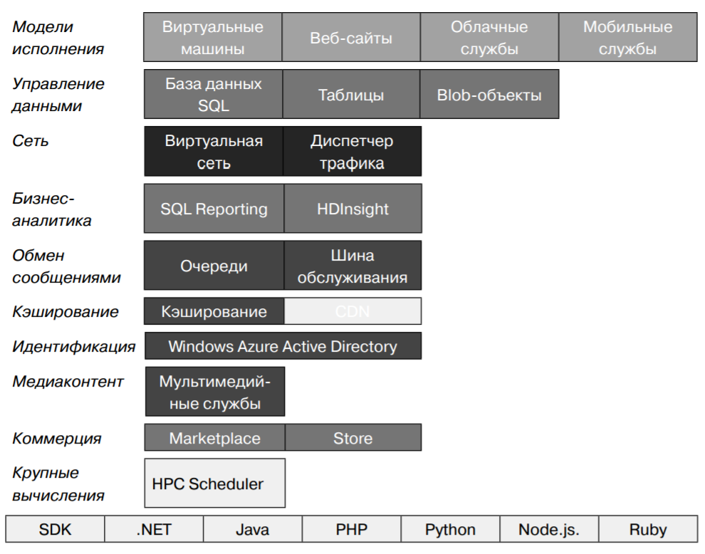Веб-сайты
Определение от Microsoft
Веб-сайты Windows Azure — это масштабируемая, безопасная и гибкая плат- форма, на основе которой можно создавать веб-приложения для бизнеса, рас- ширять охват бренда и привлекать новых клиентов
Особенности
- портал самообслуживания с галереей наиболее популярных веб-решений
- интсрумент WebMatrix
- интсрумент публикации приложений
- Azure SDK для Visual Studio
- утилиты для создания, конфигурирования и управления БД
- интеграция с системами контроля версий: TFS, GitHub, Bitbucket и т.д.
- инструмент мониторинга нагрузки и состояния ресурсов веб-приложения
- утилиты диагностики и тесторования
- конфигурация SSL-стерификатоф
- конфигурация версии платформы (.NET, PHP, Java и т.д)
Режимы работы веб-сайтов
- бесплатный - мультиарендная архитектура, каждому сайту выделена квота на ресурсы процессора, памяти и сети. Количество сайтов зависит от тарифного плана, SLA отсутствует
- распределенный - гарантируется SLA более низкого уровня по сравнению со стандартным режимом
- стандартный - можно выбрать сайты, которые будут работать на спе- циально выделенной виртуальной машине, где могут размещаться до 500 веб- сайтов
Доступность серверов
- малый сервер (1 ядро, 1,75 ГБ оперативной памяти)
- средний сервер (2 ядра, 3,5 ГБ оперативной памяти)
- большой сервер (4 ядра, 7 ГБ оперативной памяти)
автомасштабирование

https://msdn.microsoft.com/ru-ru/library/hh680945(v=pandp.50).aspx
Балансировка нагрузки
https://docs.microsoft.com/ru-ru/azure/application-gateway/application-gateway-introduction
Виртуальные машины
Определение от microsoft
Виртуальные машины Windows Azure — это масштабируемая IaaS-платформа по запросу, позволяющая быстро подготавливать и развертывать в облаке сервер- ные задачи.
Особенности
- механизмы настройки, контроля и отслеживания ВМ
- балансировщик нагрузки между ВМ
- интсрумент подключения к другим облачным службам Windows Azure, на которых работают веб-роли и рабочие роли
- можно копировть виртуальные жесткие диски (Virtual Hard Disk, VHD) из локальной среды в Azure и на их основе создать новые виртуальные машины
- Возможно и обратное действие — выгрузить VHD из Windows Azure и запустить их локально в центре обработки данных
- Новые виртуальные машины можно создавать из стандартных образов, доступ- ных в галерее Windows Azure. В число стандартных образов входят актуальные версии Windows Server, различные сборки Linux, а также Microsoft SharePoint, Microsoft SQL Server и предустановленный Microsoft BizTalk Server в составе Windows Server
- вы можете использовать для развертывания новых виртуальных машин и собственные сборки, которые были созданы локально
Особенности
- будет полный контроль над своими виртуальными машинами, развернутыми в облаке Windows Azure.
- Виртуальными машинами на базе Windows Server можно удаленно управлять по протоколу RDP (Remote Desktop Protocol)
- управлять средствами Windows PowerShell
- Виртуальные машины Linux поддерживают удаленное управление по SSH (Secure Shell)
- Вы также мо- жете создавать и подключать к виртуальным машинам диски для хранения ин- формации приложений
- Если необходимо повысить производительность виртуальных машин для ресурсоемких задач, можно выделить дополнительные процессорные ядра
- со- храняются и самостоятельно восстанавливаются после аппаратных сбоев
- Любые подключенные к вирту- альной машине диски также сохраняются, они резервированы BLOB-объектами хранилища Windows Azure. Между тем, экземпляры веб-ролей и рабочих ролей самовосстанавливаются, но не сохраняются
- Использование виртуальных машин тарифицируется по часам, поэтому для эко- номии средств вы можете просто отключить ненужные машины.
Основные компоненты
- Fabric - интерфей - обеспечивает средства управления облачной платформой
- Compute - вычисления, обрабатывает пользовательские данные
- Storage - память, сервис хранения пользовательских данных
- Config - конфигурация
Все компоненты являются сервисами .NET
Сервис Compute
- Решает задачи совместного выполнения огромного числа пользовательских приложений
- Может выполнять каждый экземпляр приложения на отдельной виртуальной машине
- Основная проблема - масштабирование
Облачные службы
С помощью облачных служб Windows Azure можно быстро создавать, развер- тывать многоуровневые приложения в облаке и управлять ими. Используя облачные службы, вы можете сконцентрироваться на разработке, те- стировании, развертывании и управлении приложением, а не тратить время на обслуживание нижележащей инфраструктуры
Особенности
- Для распреде- ленной обработки и гибкого масштабирования приложения можно назначить ему несколько ролей
- Приложения облачных служб можно создать практически на любой популярной платформе разработки, включая .NET, Node.js, PHP, Java, Python и Ruby.
- Кроме того, в облачное приложение можно интегрировать мо- бильные службы Windows Azure и мультимедийные службы.
- На портале управления Windows Azure можно отслеживать работоспособность и доступность приложений в облачных службах
- Можно также настроить оповеще- ния в реальном времени о сбоях в работе служб или снижении их производитель- ности
- А с помощью новой функции автомасштабирования ваше приложение бу- дет автоматически получать или отдавать ресурсы по мере необходимости. Это удешевит обслуживание приложений в облаке, так как оплата будет взиматься только за фактически использованные ресурсы
Сетевые службы Windows Azure
Microsoft Message Queue
Azure Service Bus
Application Insights
Application Insights позволяет осуществлять мониторинг доступности, производительности и использования вашего веб-приложения. Благодаря получаемым данным о производительности и эффективности работы приложения на практике вы можете принимать осознанные решения о направлении разработки в каждом жизненном цикле.
Типы данных
- Частота HTTP-запросов, время ответа, частота успешных выполнений
- Частота вызовов зависимостей (HTTP и SQL), время ответа, частота успешных выполнений
- Трассировки исключений из сервера и клиента
- Трассировки журналов диагностики
- Количество просмотров страниц, количество пользователей и сеансов, время загрузки браузера, исключения
- Счетчики производительности сервера
- Пользовательская телеметрия клиента и сервера
- Cегментация с учетом расположения клиента, версии браузера, версии ОС, экземпляра сервера, пользовательских измерений и многого другого
- Тесты доступности
Средства диагностики и анализа
- Интеллектуальные и настраиваемые вручную оповещения о частоте сбоев, доступности и других показателях
- Диаграммы сводных показателей за определенный период времени
- Поиск экземпляров запросов, исключений, пользовательских событий, трассировок журналов, количества просмотров страниц, зависимостей и вызовов AJAX по журналам диагностики
- Аналитика — эффективный язык запросов для телеметрии
- Панели мониторинга — на них формируются диаграммы, необходимые для отслеживания компонентов приложения
Схема работы
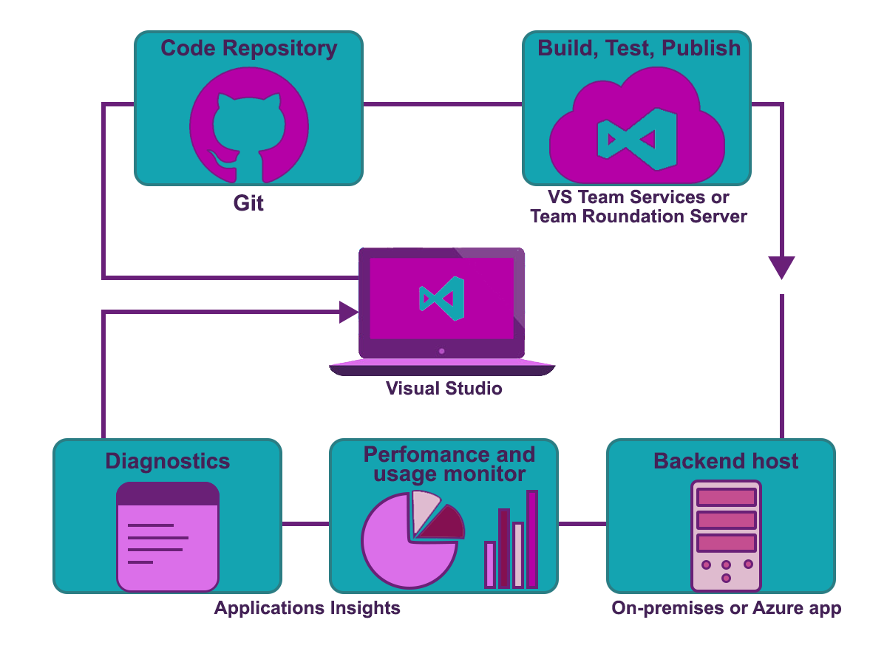Аналитические средства для разработчиков
Языки
- .NET
- Java
- JavaScript
- Objective-C
- PHP
- Python
- Ruby
- Другие
Платформы и среды
- Angular
- ASP.NET
- Android
- Docker
- iOS
- J2EE
- Приложение Mac OS X
- Node.JS
- UWP
- Другие
Платформы ведения журналов
- Log4Net, NLog
- Java, Log4J или Logback
- Semantic Logging (SLAB)
- Облачное нагрузочное тестирование
- Подключаемый модуль LogStash
Системы управления содержимым
- Concrete
- Drupal
- Joomla
- Orchard
- SharePoint
- WordPress
Экспорт и анализ данных
- Alooma
- Power
- BI
Создание собственного пакета SDK
Если для языка или платформы не существует пакета SDK, можно легко создать его
Оповещения
- Автоматическое получение оповещения превентивной диагностики, которые сообщают о необычных изменениях в частоте сбоев и других метриках
- Тесты доступности для постоянного тестирования веб-сайта из расположений по всему миру и немедленного получения сообщений электронной почты в случае сбоя проверки
- Настройте оповещения о метриках, чтобы получать оповещение о выходе метрик, таких как время отклика или доля исключений, за допустимые границы
Фильтрация и предварительная обработка
- Выборка сокращает объем данных телеметрии, не искажая статистические данные. Благодаря выборке связанные точки данных хранятся вместе, что облегчает навигацию между ними во время диагностики проблемы. На портале общее количество умножается, чтобы компенсировать выборку
- Фильтрация позволяет выбирать или изменять данные телеметрии в пакете SDK перед отправкой на сервер. Например, можно исключить запросы от роботов. При помощи фильтрации сократить трафик проще, чем при помощи выборки
- Инициализаторы телеметрии добавляют свойства к любым данным телеметрии, включая данные из стандартных модулей
- API пакета SDK используется для отправки пользовательских событий и показателей
Интерфейс ITelemetryProcessor
public interface ITelemetryProcessor
{
void Process(ITelemetry item);
}
Пример
public class SuccessfulDependencyFilter : ITelemetryProcessor
{
private ITelemetryProcessor Next { get; set; }
public SuccessfulDependencyFilter(ITelemetryProcessor next)
{
this.Next = next;
}
public void Process(ITelemetry item)
{
if (!OKtoSend(item)) { return; }
ModifyItem(item);
this.Next.Process(item);
}
private bool OKtoSend(ITelemetry item)
{
var dependency = item as DependencyTelemetry;
if (dependency == null) return true;
return dependency.Success != true;
}
private void ModifyItem(ITelemetry item)
{
item.Context.Properties.Add("app-time", DateTime.Now.ToLongTimeString());
}
}
Настройка App Insights
Добавление новой службы

Настройка параметров

Результат настройки
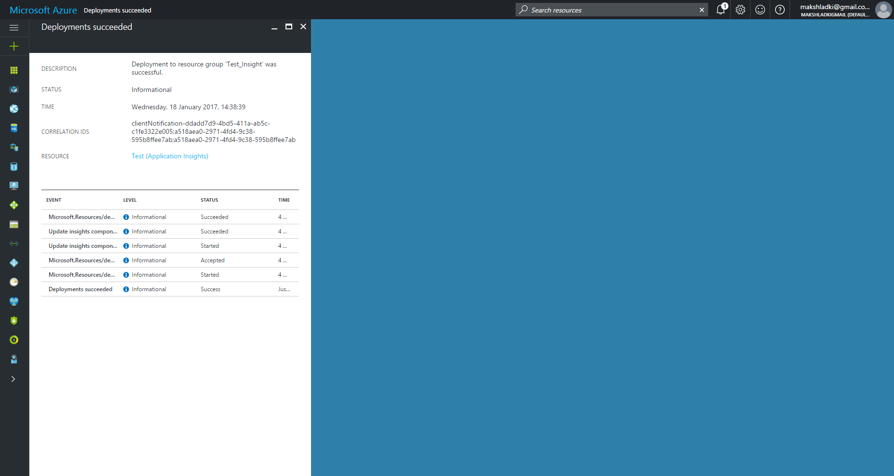Панель управления
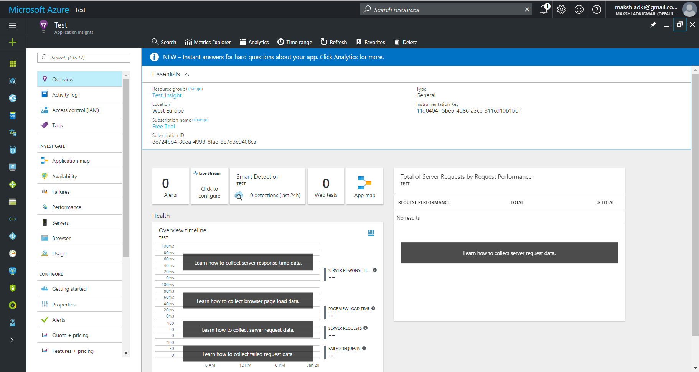Интерфейс ITelemetry
public interface ITelemetry
{
// Контекст связанный с текущей телеметрией
TelemetryContext Context { get; }
// Отслеживания абсолютного порядка телеметрий. Состоит из двух частей:
// постоянный идентификатор для текущего сеанса
// и идентификатор для каждого события добавляется в очередь (инкрементален)
string Sequence { get; set; }
// Время записи данных телеметрии
DateTimeOffset Timestamp { get; set; }
// Проверяет наличие потенциально опасных (или не валидных) данных
void Sanitize();
}
Класс TelemetryContext
public sealed class TelemetryContext
{
public TelemetryContext();
public CloudContext Cloud { get; }
public ComponentContext Component { get; }
public DeviceContext Device { get; }
public string InstrumentationKey { get; set; }
public LocationContext Location { get; }
public OperationContext Operation { get; }
public IDictionary<string, string> Properties { get; }
public SessionContext Session { get; }
public UserContext User { get; }
}
Класс TelemetryConfiguration
public sealed class TelemetryConfiguration : IDisposable
{
public TelemetryConfiguration();
public static TelemetryConfiguration Active { get; }
public bool DisableTelemetry { get; set; }
public string InstrumentationKey { get; set; }
public ITelemetryChannel TelemetryChannel { get; set; }
public IList<ITelemetryInitializer> TelemetryInitializers { get; }
public TelemetryProcessorChainBuilder TelemetryProcessorChainBuilder { get; }
public ReadOnlyCollection<ITelemetryProcessor> TelemetryProcessors { get; }
public static TelemetryConfiguration CreateDefault();
public static TelemetryConfiguration CreateFromConfiguration(string config);
public void Dispose();
}
Класс TelemetryClient
public sealed class TelemetryClient
{
public TelemetryClient();
public TelemetryClient(TelemetryConfiguration configuration);
public TelemetryContext Context { get; }
public string InstrumentationKey { get; set; }
public void Flush();
public void Initialize(ITelemetry telemetry);
public bool IsEnabled();
public void Track(ITelemetry telemetry);
public void TrackAvailability(AvailabilityTelemetry telemetry);
public void TrackAvailability(string name, DateTimeOffset timeStamp, TimeSpan duration, string runLocation, bool success, string message = null);
public void TrackEvent(EventTelemetry telemetry);
public void TrackEvent(string eventName, IDictionary<string, string> properties = null, IDictionary<string, double> metrics = null);
public void TrackException(ExceptionTelemetry telemetry);
public void TrackException(Exception exception, IDictionary<string, string> properties = null, IDictionary<string, double> metrics = null);
public void TrackMetric(MetricTelemetry telemetry);
public void TrackMetric(string name, double value, IDictionary<string, string> properties = null);
public void TrackPageView(string name);
public void TrackPageView(PageViewTelemetry telemetry);
public void TrackRequest(RequestTelemetry request);
public void TrackRequest(string name, DateTimeOffset startTime, TimeSpan duration, string responseCode, bool success);
public void TrackTrace(TraceTelemetry telemetry);
public void TrackTrace(string message);
public void TrackTrace(string message, IDictionary<string, string> properties);
public void TrackTrace(string message, SeverityLevel severityLevel);
public void TrackTrace(string message, SeverityLevel severityLevel, IDictionary<string, string> properties);
}
Основные методы класса TelemetryClient
Метод TrackTrace
Используется для диагностики проблемных мест (анализ и диагностический поиск) приложения. Может использловаться как "обертка" для системы логирования
public void TrackTrace(string message);
public void TrackTrace(string message, IDictionary<string, string> properties);
public void TrackTrace(string message, SeverityLevel severityLevel);
public void TrackTrace(
string message,
SeverityLevel severityLevel,
IDictionary<string, string> properties
);
public void TrackTrace(TraceTelemetry telemetry);
SeverityLevel
public enum SeverityLevel
{
Verbose = 0,
Information = 1,
Warning = 2,
Error = 3,
Critical = 4
}
Класс TraceTelemetry
Используется для логирования данных. Оперирует сообщением, временем активации и дополнительными параметрами
public sealed class TraceTelemetry :
ITelemetry, ISupportProperties, ISupportSampling
{
public TraceTelemetry();
public TraceTelemetry(string message);
public TraceTelemetry(string message, SeverityLevel severityLevel);
public TelemetryContext Context { get; }
public string Message { get; set; }
public IDictionary<string, string> Properties { get; }
public string Sequence { get; set; }
public SeverityLevel? SeverityLevel { get; set; }
public DateTimeOffset Timestamp { get; set; }
}
Метод TrackPageView
логирует название страницы (web, mobile, desktop)-приложения, с которой пользователь работает в данный момент
public void TrackPageView(string name);
public void TrackPageView(PageViewTelemetry telemetry);
Класс PageViewTelemetry
отслеживание посещаймости страниц пользователями
public sealed class PageViewTelemetry :
ITelemetry, ISupportProperties, ISupportSampling
{
public PageViewTelemetry();
public PageViewTelemetry(string pageName);
public TelemetryContext Context { get; }
// Длительность посещения страницы
public TimeSpan Duration { get; set; }
// Пользовательские метрики
public IDictionary<string, double> Metrics { get; }
// Имя страницы
public string Name { get; set; }
// Словарь для дополнительных параметров
public IDictionary<string, string> Properties { get; }
public string Sequence { get; set; }
// Время, когда событие произошло
public DateTimeOffset Timestamp { get; set; }
// URL-страницы
public Uri Url { get; set; }
}
Метод TrackEvent
Позволяет логировать вызовы событий в приложении для определения частотности выбора пользователем определенной функции, цели и т.д.
public void TrackEvent(EventTelemetry telemetry);
public void TrackEvent(
string eventName,
IDictionary<string, string> properties = null,
IDictionary<string, double> metrics = null
);
Метод TrackRequest
Применяется для логирования или имитации выполнения HTTP-запросов в приложении
public void TrackRequest(RequestTelemetry request);
// name: имя запроса или путь
// startTime: время инициализации запроса
// duration: продолжительность выполнения
// responseCode: status code
// success: True, если обработан успешно
public void TrackRequest(
string name,
DateTimeOffset startTime,
TimeSpan duration,
string responseCode,
bool success
);
Класс RequestTelemetry
Инкапсулирует информацию о HTTP-запросах в приложении
public sealed class RequestTelemetry :
OperationTelemetry, ITelemetry, ISupportProperties, ISupportSampling
{
public RequestTelemetry();
public RequestTelemetry(string name, DateTimeOffset startTime,
TimeSpan duration, string responseCode, bool success);
public override TelemetryContext Context { get; }
public override TimeSpan Duration { get; set; }
public string HttpMethod { get; set; }
// Идентификатор запроса
public override string Id { get; set; }
public IDictionary<string, double> Metrics { get; }
// Имя человека, выполнявшего запрос
public override string Name { get; set; }
public override IDictionary<string, string> Properties { get; }
public string ResponseCode { get; set; }
public override string Sequence { get; set; }
// Идентифицирует субъект, обычно записывается хеш
public string Source { get; set; }
public override bool? Success { get; set; }
public override DateTimeOffset Timestamp { get; set; }
public Uri Url { get; set; }
}
Метод TrackMetric
Используется для отправки метрик, которые не привязаны к конкретным событиям. Метрики отображаются в виде статистических графиков, но в отличие от событий, можно выполнить диагностический поиск по отдельным значениям
public void TrackMetric(
string name, // имя метрики
double value, // значение метрики
IDictionary<string, string> properties = null
// дополнительные свойства для классификации и фильтрации
);
public void TrackMetric(MetricTelemetry telemetry);
Класс MetricTelemetry
Инкапсулирует логику отслеживания метрик
public sealed class MetricTelemetry :
ITelemetry, ISupportProperties
{
public MetricTelemetry();
public MetricTelemetry(string metricName, double metricValue);
public TelemetryContext Context { get; }
// количество элементов
public int? Count { get; set; }
// максимальное значение для метрики
public double? Max { get; set; }
// минимальное значение для метрики
public double? Min { get; set; }
public string Name { get; set; }
public IDictionary<string, string> Properties { get; }
public string Sequence { get; set; }
// Стандартное отклонение для значения метрики
public double? StandardDeviation { get; set; }
public DateTimeOffset Timestamp { get; set; }
// Значение метрики
public double Value { get; set; }
}
Метод TrackException
Логирует отловленные исключения. Используется для подсчета показателя частоты возникновения проблем. Включает в отчеты результат стека вызова функций
public void TrackException(
Exception exception,
IDictionary<string, string> properties = null,
IDictionary<string, double> metrics = null
);
public void TrackException(ExceptionTelemetry telemetry);
Класс ExceptionTelemetry
Инкапсулирует логику логирования искулючительных ситуаций
public sealed class ExceptionTelemetry :
ITelemetry, ISupportProperties, ISupportSampling
{
public ExceptionTelemetry();
public ExceptionTelemetry(Exception exception);
public TelemetryContext Context { get; }
public Exception Exception { get; set; }
// Информация о месте обработки и отлова исключения
public ExceptionHandledAt HandledAt { get; set; }
public string Message { get; set; }
public IDictionary<string, double> Metrics { get; }
public IDictionary<string, string> Properties { get; }
public string Sequence { get; set; }
public SeverityLevel? SeverityLevel { get; set; }
public DateTimeOffset Timestamp { get; set; }
}
Простой пример
Nuget-пакет
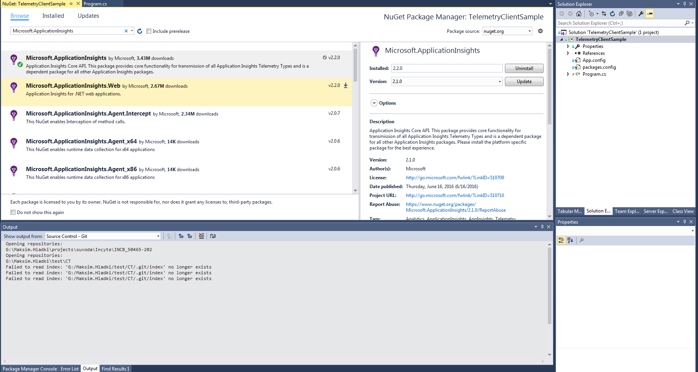Какой-то класс (псевдокод)
public class ApplicationInsight
{
private static readonly Lazy<ApplicationInsight> _instance;
private readonly TelemetryClient _tc;
private ApplicationInsight()
public static ApplicationInsight Instance {get;}
private TelemetryClient InitializeTelemetry(){/**/}
public void TrackPageView(string name){/**/}
public void TrackException(Exception ex){/**/}
public void TrackMetric(string metricName, int value){/**/}
public void TrackTrace(string eventName, int number){/**/}
public void Flush(){/**/}
}
Singleton
public class ApplicationInsight
{
private static readonly Lazy<ApplicationInsight> _instance =
new Lazy<ApplicationInsight>(() => new ApplicationInsight());
private readonly TelemetryClient _tc;
private ApplicationInsight()
{
_tc = InitializeTelemetry();
}
public static ApplicationInsight Instance
{
get { return _instance.Value; }
}
//.......................
}
Инициализация параметров
private TelemetryClient InitializeTelemetry()
{
var tc = new TelemetryClient
{
InstrumentationKey =
@"clientNotification-ddadd7d9-4bd5-411a-ab5c-c1fe3322e005;
a518aea0-2971-4fd4-9c38-595b8ffee7ab;
a518aea0-2971-4fd4-9c38-595b8ffee7ab"
};
tc.Context.User.Id = Environment.UserName;
tc.Context.Session.Id = Guid.NewGuid().ToString();
tc.Context.Device.OperatingSystem = Environment.OSVersion.ToString();
return tc;
}
Пример использования
static void Main(string[] args)
{
ApplicationInsight.Instance.TrackPageView("Home");
ApplicationInsight.Instance.TrackPageView("Account");
ApplicationInsight.Instance.TrackEvent("Login");
ApplicationInsight.Instance.TrackException(
new AuthenticationException("User not found"));
ApplicationInsight.Instance.TrackEvent("Redirect",
new Dictionary<string, string>
{
{ "From", "Account" },
{ "To", "Shop" },
{ "DailyKey" , "DSJU-WERDT-9803"}
});
ApplicationInsight.Instance.TrackPageView("Shop");
ApplicationInsight.Instance.TrackTrace("Overtime", 100);
ApplicationInsight.Instance.TrackMetric("Total count", 32);
ApplicationInsight.Instance.Flush();
}
Результаты в Azure
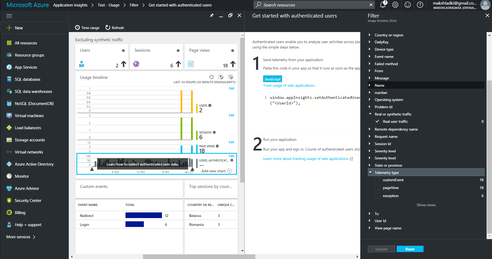Аналитика
Аналитика — это мощный инструмент поиска Application Insights. На этих страницах описан язык запросов аналитики приложений.
Особенности языка
- Фильтрация необработанных данных телеметрии приложения по любым полям, включая пользовательские свойства и метрики.
- Соединение нескольких таблиц — соотношение запросов с просмотрами страниц, вызовами зависимостей, исключениями и трассировками журнала.
- Сложные статистические агрегаты.
- Такие же мощные, как в SQL, но гораздо проще для составления сложных запросов: вместо вложенных инструкций данные передаются из одной простой операции в другую.
- Мгновенные яркие визуализации.
- Типичный запрос содержит исходную таблицу и ряд операторов, разделенных |.
Поддерживаемые конструкции
- Let: присвоение имени таблице
- Запросы и операторы: count, evaluate, extend, join, limit, mvexpand, parse, project, project-away, range, reduce, render directive, restrict clause, sort, summarize, take, top, top-nested, union, where, where-in
- Статистические функции: any, argmax, argmin, avg, buildschema, count, countif, dcount, dcountif, makelist, makeset, max, min, percentile, percentiles, percentilesw, percentilew, stdev, sum, variance
- Скаляры: логические литералы, логические операторы, приведения, скалярные сравнения, gettype, hash, iff, isnotnull, isnull, notnull, toscalar
- Числа: арифметические операторы, числовые литералы, abs, bin, exp, floor, gamma, log, rand, sqrt, todouble, toint, tolong
Поддерживаемые конструкции
- Дата и время: выражения даты и времени, литералы даты и времени, ago, datepart, dayofmonth, dayofweek, dayofyear, endofday, endofmonth, endofweek, endofyear, getmonth, getyear, now, startofday, startofmonth, startofweek, startofyear, todatetime, totimespan, weekofyear
- Строка: GUID, маскируемые строковые литералы, cтроковые литералы, cравнение строк, countof, extract, isempty, isnot, empty, empty, notempty, parseurl, replace, split, strcat, strlen, substring, tolower, toupper
- Массивы, объекты и динамические типы: литералы массива и объекта, функции динамического объекта, динамические объекты, выражения пути JSON, arraylength, extractjson, parsejson, range, todynamic, treepath
Основные операторы запроса
- take - отображение n строк
- top - выборка n строк
- sort - сортировка для всей таблицы
- project - выбор, переименование и вычисление столбцов
- extend - вычисление столбцов
- summarize - агрегирование групп строк
- where - фильтрация по условию
- join - доступ к нескольким таблицам, включая запросы и исключения
- let - присвоение результата переменной
Примеры запросов
Пример 1
requests | top 10 by timestamp desc
requests | sort by timestamp desc | take 10
Пример 2
requests | top 10 by timestamp desc
| project timestamp, name, resultCode
Пример 3
requests
| top 10 by timestamp desc
| project
name,
response = resultCode,
timestamp,
['time of day'] = floor(timestamp % 1d, 1s)
Пример 4
exceptions
| where device_Id == "browser"
| summarize count()
by device_BrowserVersion, outerExceptionMessage
Пример 5
dependencies
| where timestamp > ago(1d) and client_Type == "Browser"
| join (browserTimings | where timestamp > ago(1d))
on operation_Id
Пример 6
requests
| where timestamp > ago(7d) and client_City == "Hyderabad"
| summarize clients = dcount(client_IP)
by tod_UTC=bin(timestamp % 1d, 1h), resultCode
| extend local_hour = (tod_UTC + 5h + 30min) % 24h + datetime("2001-01-01")
Пример 7

Схема работы пользователя

Service Bus
Сервисная шина предприятия
Сервисная шина предприятия (enterprise service bus) — связующее программное обеспечение, обеспечивающее централизованный и унифицированный событийно-ориентированный обмен сообщениями между различными информационными системами на принципах сервис-ориентированной архитектуры
Назначение
- Концентрация обмена сообщениями между различными системами через единую точку
- Обеспечивается транзакционный контроль
- Единым механизм преобразование данных
- Единый механиз обеспечения сохранности сообщений
Основные характеристики
- Поддержка синхронного и асинхронного способа вызова служб
- Использование защищенного транспорта, с гарантированной доставкой сообщений, поддерживающего транзакционную модель
- Статическая и алгоритмическая маршрутизация сообщений
- Доступ к данным из сторонних информационных систем с помощью специально разработанных адаптеров
- Обработка и преобразование сообщений
- Оркестровка служб (описывает как сервисы должны взаимодействовать между собой, используя для этого обмен сообщениями, включая бизнес-логику и последовательность действий)
- Разнообразные механизмы контроля и управления (аудиты, протоколирование)
Способы работы
- Синхронный - потребитель использует один поток для вызова службы; поток передает запрос, блокируется на время выполнения службы и ждет ответ. Если у потребителя возникает аварийная ситуация во время блокирования при работе службы, нельзя повторно подключиться к этой службе после перезапуска, поэтому ответ теряется
- Асинхронный - потребитель использует два потока для вызова службы; один - для передачи запроса, второй – для приема ответ. Если у потребителя возникает аварийная ситуация во время ожидания ответа на запрос, после перезапуска потребитель может продолжать ожидать ответ, ответ не теряется
Примеры программных продуктов
- Active Directory
- UDDI
- BizTalk Server
- MSMQ
- WCF
Пример схем использований
Схема канала точка-точка
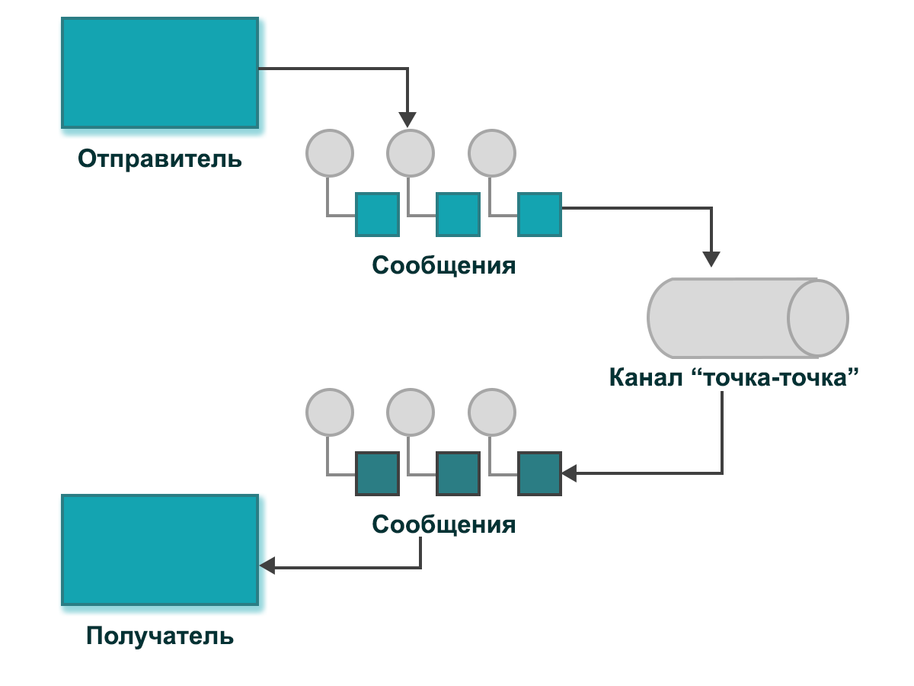Схема канала публикация-подписка

Схема канала недоставленных сообщений

Схема гарантированной доставки
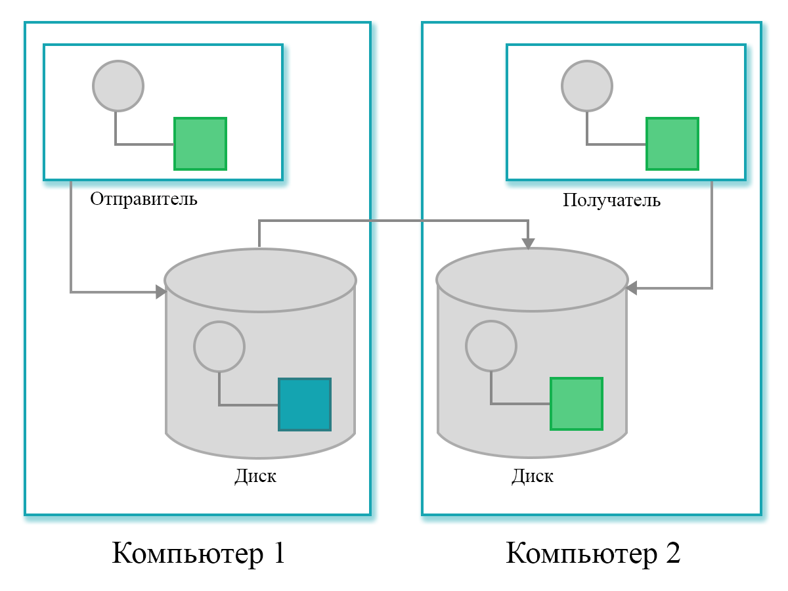Схема шины сообщений

Пример схемы функционирования ПО
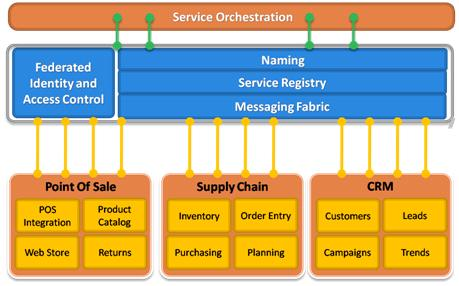Очередь сообщений
Причины использования MQ
- Слабое связывание — создают неявные интерфейсы обмена данными, которые позволяют процессам быть независимыми друг от друга
- Избыточность — позволяют избежать случаев неэкономного использования ресурсов процесса (например памяти) в результате хранения необработанной информации
- Масштабируемость — позволяют распределить процессы обработки информации. Увеличивается скорость, с которой сообщения добавляются в очередь и обрабатываются
- Эластичность и возможность выдерживать пиковые нагрузки — могут выполнять роль своего рода буфера для накопления данных в случае пиковой нагрузки, и не допуская отказа системы
- Отказоустойчивость — позволяют отделить процессы друг от друга, так что если процесс, который обрабатывает сообщения из очереди падает, то сообщения могут быть добавлены в очередь на обработку позднее, когда система восстановится
Причины использования MQ
- Гарантированная доставка — гарантирует, что сообщение будет доставлено и обработано в любом случае
- Гарантированный порядок доставки — большая часть систем очередей сообщений способны обеспечить гарантии того, что данные будут обрабатываться в определённом порядке (чаще всего в том порядке в котором они поступили)
- Буферизация — позволяет отправлять и получать сообщения при этом работая с максимальной эффективностью, предлагая буферный слой
- Понимание потоков данных — позволяют выявлять узкие места в потоках данных приложения, легко можно определить какая из очередей забивается, какая простаивает и определить что необходимо делать — добавлять новых обработчиков сообщений или оптимизировать текущую архитектуру
- Асинхронная связь — предоставляют возможность асинхронной обработки данных, которая позволяет поместить сообщение в очередь без обработки, позволяя системе обработать сообщение позднее, когда появится возможность
Область применения
- Обработка данных
- Буферизация потоков данных
- Управление процессами
- Интеграция и взаимодействие систем
Примеры очередей
- RabbitMQ
- MSMQ
- Amazon SQS
- IronMQ
- StormMQ
- Azure Queues
Azure Service Bus
Служебная шина Azure
Высоконадежная облачная система для обмена сообщениями между приложениями и службами, которая эффективно работает, даже если некоторые элементы инфраструктуры недоступны в сети
Основное назначение
Создание масштабируемых облачных решений
Асинхронный обмен сообщениями не только обеспечивает устойчивую работу приложений, но и дает возможность надежно масштабировать используемое решение. Интеграция облачных ресурсов, таких как база данных SQL, служба хранилища и веб-приложения службы приложений, со службой обмена сообщениями служебной шины гарантирует надежную работу в условиях любых нагрузок и позволяет избежать простоев в случае сбоя
Внедрение сложных процессов обмена сообщениями
Служебная шина позволяет создавать надежные топологии обмена сообщениями со сложными параметрами маршрутизации, одновременно повышая общую доступность решения. С ее помощью можно доставлять сообщения одновременно нескольким подписчикам, а также рассылать сообщения в системы, расположенные на нижних уровнях архитектуры системы
Повышение безопасности между гибридными облаками
Функция гибридных подключений в ретрансляторе служебной шины позволяет безопасно работать с имеющимися ресурсами, где бы они ни находились, не используя сложные VPN-конфигурации, настройки брандмауэра или параметры сети. Эта функция обеспечивает расширенную проверку подлинности и подключение через облако, а также позволяет просматривать и отслеживать активность
Использование одного подключения несколькими приложениями
Благодаря гибридным подключениям и ретранслятору служебной шины не нужно никуда переносить свои локальные данные, чтобы настроить к ним доступ из облака или любого другого расположения
Схема работы

Механизмы взаимодействия
- Очереди (однонаправленное взаимодействие) - действует как посредник (брокер), который хранит отправленные сообщения, пока они не будут получены. Каждое сообщение получает один получатель
- Разделы (однонаправленное взаимодействие с использованием подписок) - подобно очереди, действует как брокер, но каждая подписка может при необходимости применить фильтр, чтобы получать только те сообщения, которые соответствуют определенным условиям. В одном разделе может быть несколько подписок
- Ретрансляторы (двунаправленное взаимодействие) - не хранит передаваемые сообщения, так как не является брокером
Ключевые моменты
При создании очереди, раздела или ретранслятора задается имя. В комбинации с именем пространства имен это имя создает уникальный идентификатор объекта. Приложения могут передать это имя службе Service Bus, а затем использовать соответствующую очередь, раздел или ретранслятор для взаимодействия с другими приложениями
Каждое сообщение состоит из двух частей: набора свойств (пар ключ/значение) и двоичного тела сообщения
Очереди
Схема обмена данными через очередь
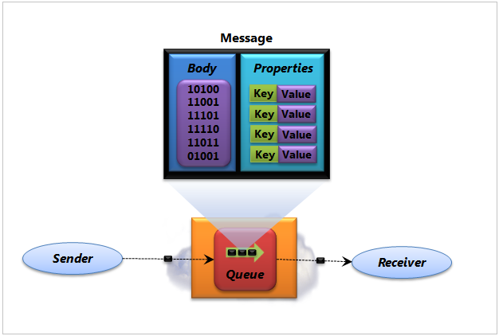Особенности
- Два способа считывания сообщения: ReceiveAndDelete (извлекает сообщение из очереди и сразу удаляет его) и PeekLock (извлекает сообщение из очереди, блокирует сообщение, делая его невидимым для других получателей, а затем ожидает определенного события)
- Получатели принимают и обрабатывают сообщения в том порядке, в котором они были добавлены в очередь
- Может отправлять и получать сообщения с разной скоростью (выравнивании нагрузки). Это сокращает расходы на инфраструктуру, необходимую для обработки нагрузки приложения
- Уменьшает зависимость между компонентами. Обновление потребителя не будут оказывать влияния на производителя
Разделы
Схема обмена данными через разделы

Особенности
- Позволяют каждому принимающему приложению создавать собственную подписку, определив фильтр. Подписчик будет видеть только те сообщения, которые соответствуют фильтру
- Два способа считывания сообщения: ReceiveAndDelete и PeekLock)
- Каждое опубликованное сообщение становится доступным в рамках каждой подписки, зарегистрированной в разделе. Сообщения отправляются в раздел и доставляются в одну или несколько связанных подписок в зависимости от правил фильтрации
- Нельзя непосредственно получить сообщение из раздела (только из подписок). Подписка раздела напоминает виртуальную очередь, которая получает копии сообщений, отправленных в раздел
Ретрансляторы
Схема обмена данными через ретранслятор

Особенности
- Обходит ограничения реобразование сетевых адресов (NAT) и блокировки Брандмауэром внешних портов через NAT
- Для двунаправленного взаимодействия через ретранслятор каждое приложение устанавливает исходящее TCP-соединение с Service Bus и держит его открытым
- Удержание соединение позволяет брандмауэру разрешать входящий трафик для каждого приложения без открытия новых портов. Этот подход также решает проблему NAT, так как каждое приложение имеет постоянную конечную точку в облаке на протяжении всего обмена данными
- Service Bus предоставляет привязки WCF, которые упрощают взаимодействие приложений через ретрансляторы
Схемы работы Azure Service Bus Queues
Пример 1

Пример 2

Архитектура служебной шины Azure
Единицы масштабирования
Содержимое служебной шины упорядочено по единицам масштабирования.
Единица масштабирования — это единица развертывания, которая содержит все компоненты, необходимые для запуска службы. Для каждой области развертывается одна или несколько единиц масштабирования служебной шины
Структура единиц масштабирования
- Набор узлов шлюза - проверяют подлинность входящих запросов и обрабатывают запросы на ретрансляцию. У каждого узла шлюза есть общедоступный IP-адрес
- Набор узлов брокера сообщений - обрабатывают запросы к сущностям обмена сообщениями
- Единое хранилище шлюза - содержит данные по каждой сущности, определенной в соответствующей единице масштабирования. Хранилище шлюза реализуется на основе базы данных SQL Azure
- Хранилища сообщений - содержат сообщения из всех очередей, разделов и подписок, определенных в соответствующей единице масштабирования. Здесь же хранятся все данные подписки. Если не включены секционированные сущности обмена сообщениями, очередь или раздел сопоставляется с одним хранилищем
Контейнеры
Контейнер — логическая конструкция, которая использует одно единственное хранилище сообщений для хранения всех соответствующих данных в этом контейнере. Каждый контейнер назначается узлу брокера сообщений
Особенности контейнеров
- Определенный контейнер назначается каждой сущности обмена сообщениями
- Каждый контейнер назначается узлу брокера сообщений
- Каждый узел брокера сообщений загружает несколько контейнеров. Контейнеры назначаются узлу брокера сообщений таким образом, чтобы все узлы брокера сообщений были загружены в равной мере
- Если шаблон нагрузки меняется (один из контейнеров загружается слишком сильно) или узел брокера сообщений становится временно недоступным, контейнеры перераспределяются между узлами брокера сообщений
Пространства имен
Пространство имен — это общий контейнер для всех компонентов обмена сообщениями. В одном пространстве имен могут содержаться несколько очередей и разделов. Часто пространства имен выполняют роль контейнеров приложений
Обработка входящих запросов обмена сообщениями
Алгоритм работы
- Клиент отправляет запрос на служебную шину, подсистема балансировки нагрузки передает его в один из узлов шлюза
- Узел шлюза авторизует запрос
- Если запрос относится к сущности обмена сообщениями (очереди, разделу или подписке), узел шлюза выполняет поиск этой сущности в хранилище шлюза и определяет, в каком хранилище сообщений она находится
- Определяется какой узел брокера сообщений обслуживает контейнер в данный момент, и отправляет запрос на этот узел
- Узел брокера обрабатывает запрос и обновляет состояние сущности в хранилище контейнера
- Узел отправляет ответ обратно на узел шлюза, который пересылает соответствующий ответ клиенту, отправившему исходный запрос
Графическое представление

Обработка входящих запросов на ретрансляцию
Алгоритм работы
- Клиент отправляет запрос на служебную шину, подсистема балансировки нагрузки передает его в один из узлов шлюза
- Если запрос связан с прослушиванием, узел шлюза создает новую ретрансляцию
- Если запрос связан с подключением к определенной ретрансляции, узел шлюза переадресовывает его на узел шлюза, которому принадлежит ретрансляция
- Узел шлюза, которому принадлежит ретрансляция, отправляет запрос о подключении клиенту прослушивания, чтобы прослушиватель создал временный канал к узлу шлюза, получившему запрос на подключение
- При установки подключения ретрансляции, клиенты могут обмениваться сообщениями через узел шлюза, используемый для связи
Графическое представление

Аутентификация и авторизация
Приложения могут проходить проверку подлинности в служебной шине Azure, используя либо проверку подлинности подписанного URL-адреса (SAS), либо службу контроля доступа Azure Active Directory (ACS).
Проверка подлинности с помощью подписанного URL-адреса (SAS)
- Позволяет предоставлять пользователю доступ к ресурсам служебной шины с определенными правами
- Предусматривает настройку соответствующих прав для криптографического ключа в ресурсе служебной шин
- Поддерживается в ретрансляторах служебной шины
- Для получения доступа к сущности, клиенту требуется маркер SAS, который создается с помощью правила SharedAccessAuthorizationRule
- Маркер создается с помощью хэш-функции HMAC-SHA256 строки ресурса, состоящей из URI ресурса, к которому запрашивается доступ, и срока действия с криптографическим ключом, связанным с правилом авторизации
Объект SharedAccessAuthorizationRule
- KeyName — определяет правило
- PrimaryKey — криптографический ключ, используемый для подписи и проверки маркеров SAS
- SecondaryKey — криптографический ключ, используемый для подписи и проверки маркеров SAS
- Rights — набор прав на прослушивание, отправку или управление
Проверка подлинности ACS
Аутентификация с помощью ACS осуществляется с помощью связанного пространства имен ACS
- Необходимо настроить соответствующие отношения доверия
- Для получения доступа к сущности, клиент запрашивает маркер SWT из ACS с соответствующими утверждениями, предоставляя свои учетные данные. Затем маркер SWT необходимо отправить в служебную шину как часть запроса. Это позволит авторизовать клиента для получения доступа к сущности
- Проверка подлинности импользует объект SharedSecretTokenProvider
- Все интерфейсы API, которые принимают строку подключения в качестве параметра, поддерживают строки подключения ACS
Итого
- Позволяет получать сообщения без постоянного «поллинга»
- Гарантирует сохранение порядка обработки сообщений
- Автоматически детектирует дубликаты сообщений
- Обрабатывать сообщения параллельно (сообщения ассоциируются с потоком по SessionId)
- Поддерживает транзакционность при отсылке или приёме группы сообщений
- Время жизни сообщения достаточно долгое (более 7 дней)
- Обрабатывать сообщения более 64КБ
Итого
- Обеспечение безопасности на основе ролей и прав доступа
- Гарантия доставки
- Интерграция с .NET сервисами (WCF)
- Обмену сообщениями через посредника служебной шины на основе REST
- SDK для .NET, Java, Node.js, Ruby, Python, PHP
Пример использования
Панель управления

Создание пространства имен службы

Тарифный план
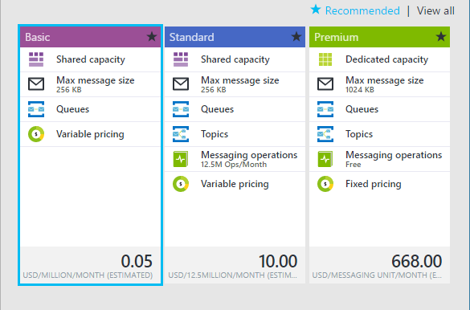Результат создания namespace
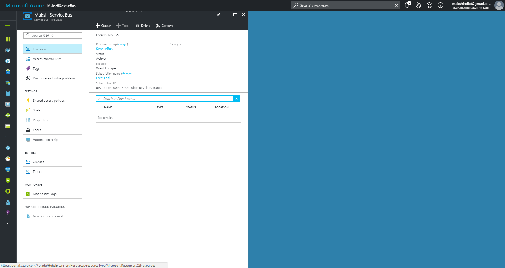Создание очереди
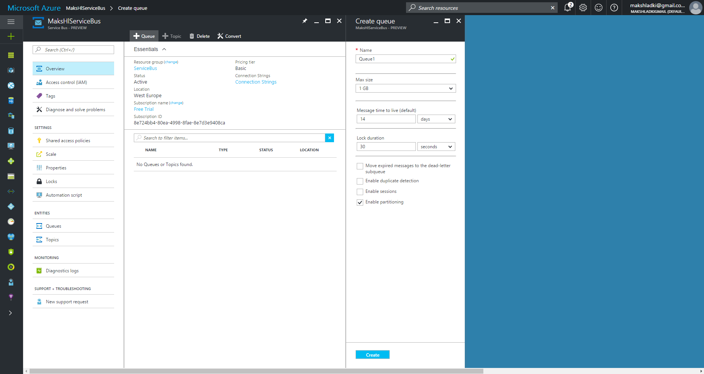Результат создания очереди
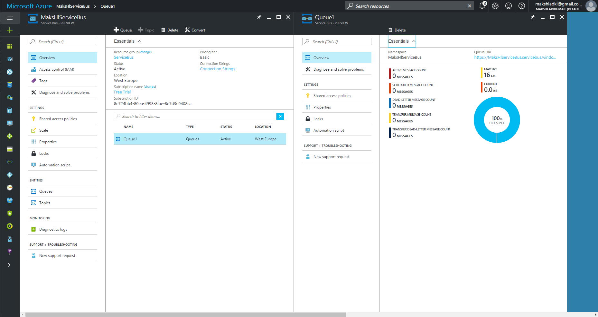Получение учетных данных управления

Строка подключения

Nuget-пакет
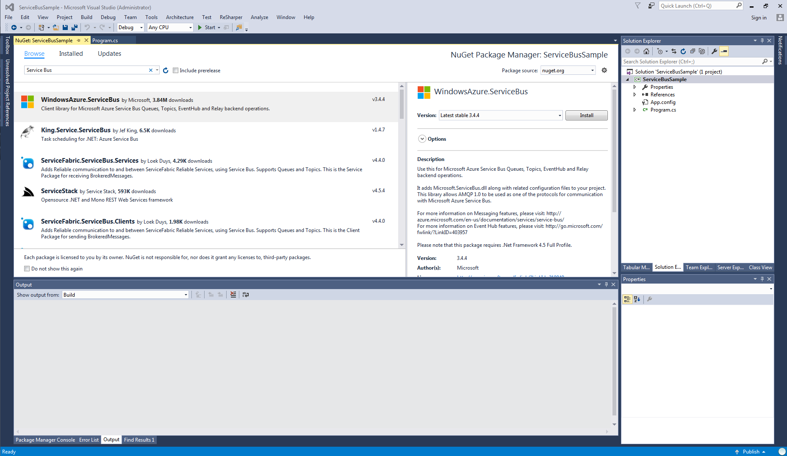Отправка сообщения
static void Main(string[] args)
{
//CONNECTION STRING–PRIMARY KEY
var connectionString = @"Endpoint=
sb://makshlservicebus.servicebus.windows.net/;
SharedAccessKeyName=RootManageSharedAccessKey;
SharedAccessKey=Jha3oP0D5jZku5Fs2nS/nhVW9bd6W9+00SqKW5T1Upw=";
var queueName = "queue1";
var client = QueueClient.CreateFromConnectionString(
connectionString,
queueName
);
var message = new BrokeredMessage("This is a test message!");
client.Send(message);
}
Статистика

Получение сообщения
static void Main(string[] args)
{
//CONNECTION STRING–PRIMARY KEY
var connectionString = @"Endpoint=
sb://makshlservicebus.servicebus.windows.net/;
SharedAccessKeyName=RootManageSharedAccessKey;
SharedAccessKey=Jha3oP0D5jZku5Fs2nS/nhVW9bd6W9+00SqKW5T1Upw=";
var queueName = "queue1";
var client = QueueClient.CreateFromConnectionString(
connectionString,
queueName
);
client.OnMessage(message =>
{
Console.WriteLine($"Message body: {message.GetBody<String>()}");
Console.WriteLine($"Message id: {message.MessageId}");
});
}
Полученные сообщения

Статистика

Спасибо за внимание